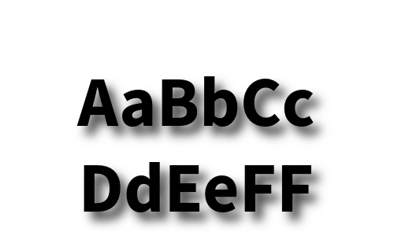
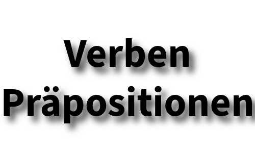

Yükleme
Home

Yükleme 1 - Buchstaben

Yükleme 2 - Kasus
Yükleme 3 - Verben
Yükleme 4 - Konjugation der Verben
Yükleme 6 - Wichtige Verben
Yükleme 10 - Pronomen
Yükleme 11 - Artikel
Yükleme 14 - Präpositionen
Yükleme - 17 - Tageszeiten